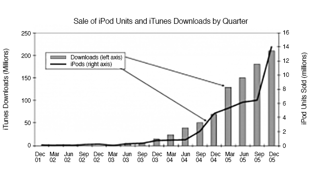
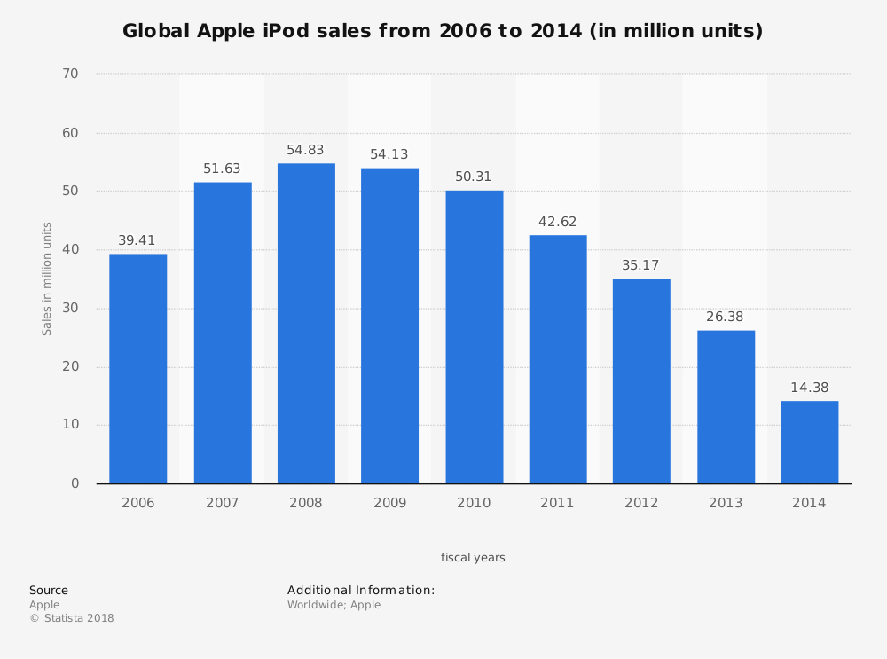

The interesting thing to observe is the correlation between iPod sales and iTunes downloads. On the graph below(), we can see that with the launch of the iTunes, iPod sales have increased and that the sales of iPods are proportional to the number of music downloads iTunes has. It can be said that the iPod and iTunes form an ecosystem and are interlinked with each other.

And down here we see sales statistics of iPods from 2006 to 2014. A slow decline occurs after the year 2008 as the iPod slowly leaves the spotlight to make way for the iPhone, Apple's most impactful product.
